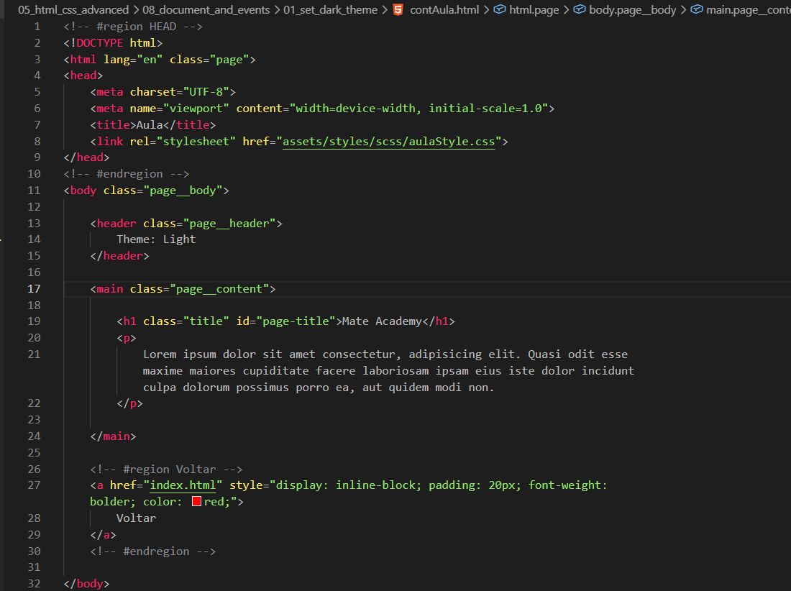
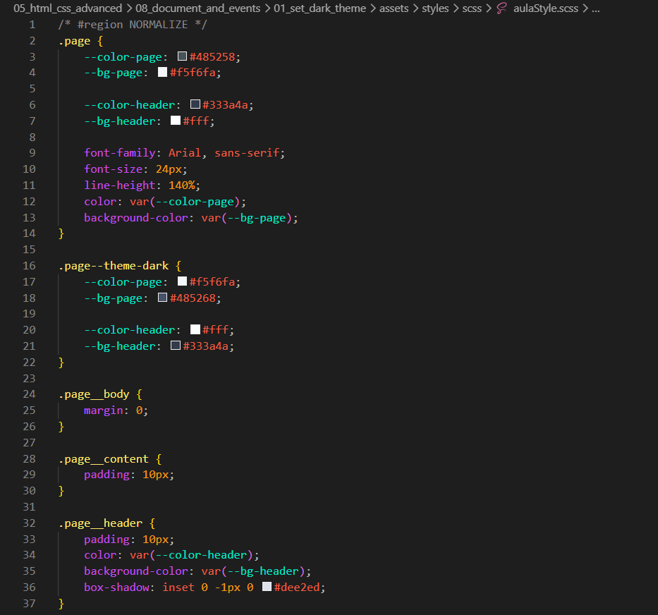
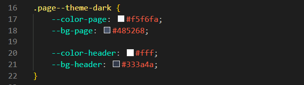
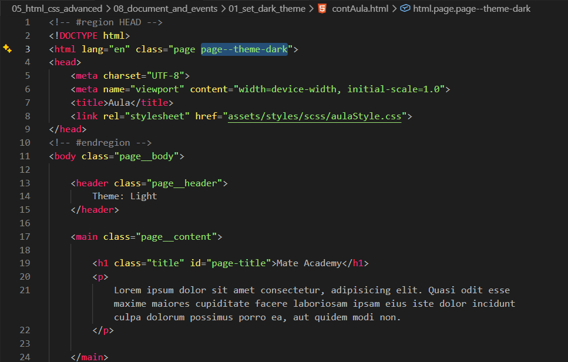
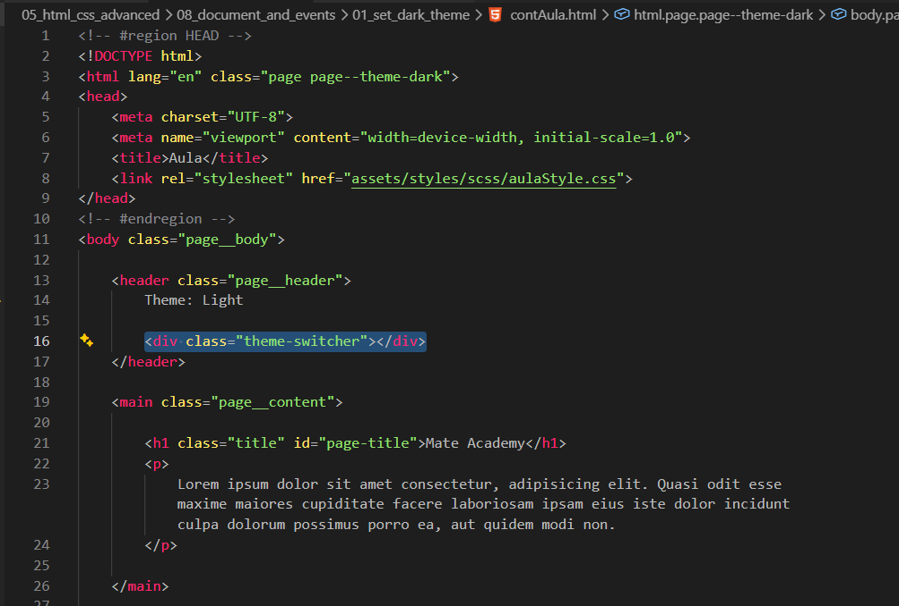
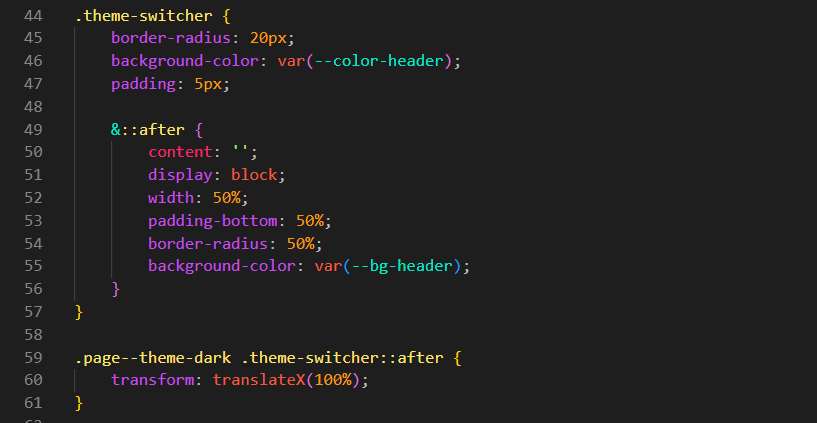
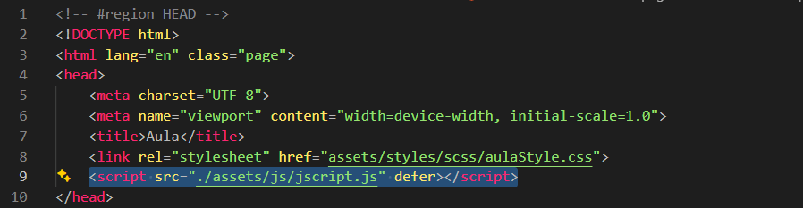
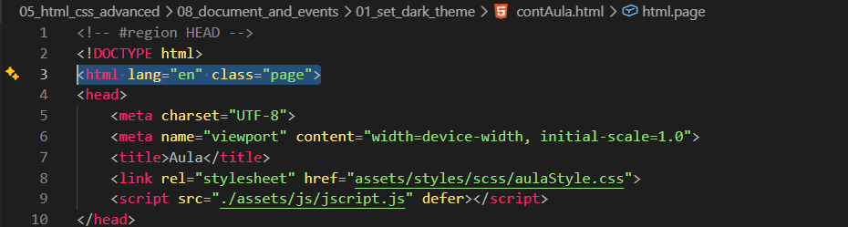
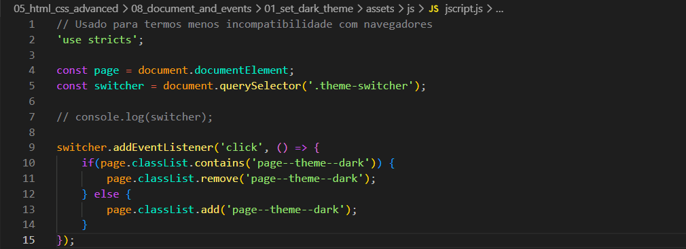

Set Dark Theme
Intro
Aqui estaremos vendo como podemos estar mudando o tema de nossa pagina como em paginas com claro e escuro.
Aqui estaremos vendo como podemos estar mudando o tema de nossa pagina como em paginas com claro e escuro.
HTML:

CSS:

Isso pode ser feito com a ajuda de um modificador que ira mudar as cores. Nosso modificador ficara da seguinte forma:

Com isso iremos precisar apenas mudar as cores de lugar.
Apos feito o modificador, precisamos adicionar esse modificador a toda nossa pagina, ficando da seguinte forma:

Agora a unica coisa que nos falta e adicionar um meio de controlar a alternancia entre os temas.
Iremos adicionar um elemento ao nosso header chamado de theme-switcher, ficando da seguinte forma:

Apos feito isso podemos estar fazendo nossas modificacoes em nosso elemento switcher, ficando da seguinte forma:

Agora a unica coisa que nos resta e gerenciar a pagina com JS, primeiro iremos iniciar o JS em nossa pagina, ficando da seguinte forma:

Apos fazermos as modificacoes JS podemos estar deletando nossa class="page--theme--dark":

Nosso JS, ficou da seguinte forma:

Podemos estar usando esse atributo para atrasar a execucao de nosso JS, para que ele possa esperar a pagina carregar antes de executar.
Iremos comecar adicionando um modificador proprio